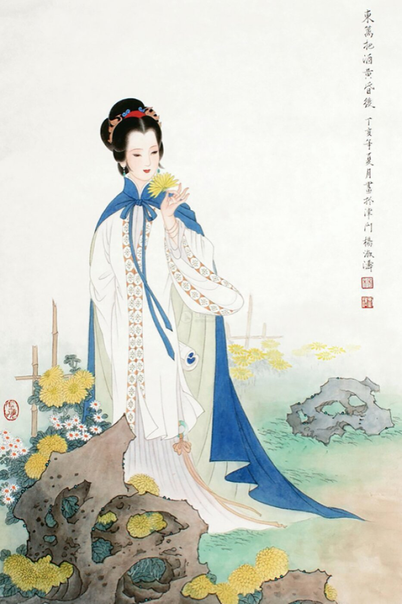
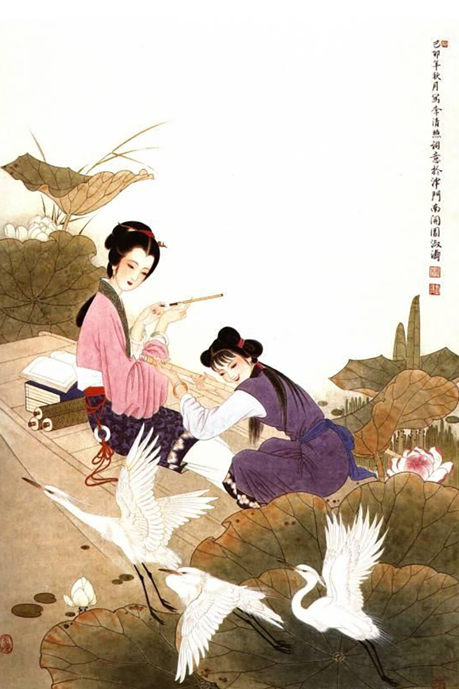
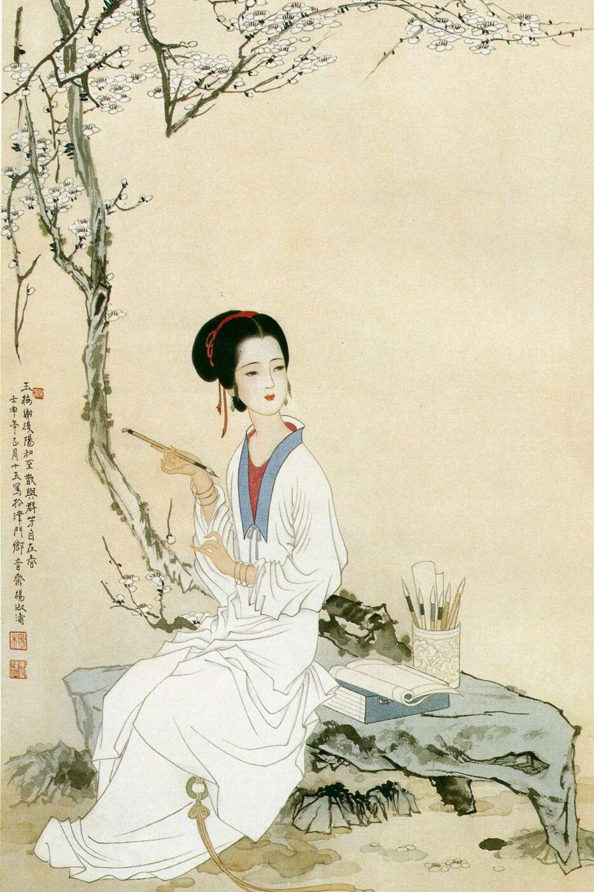
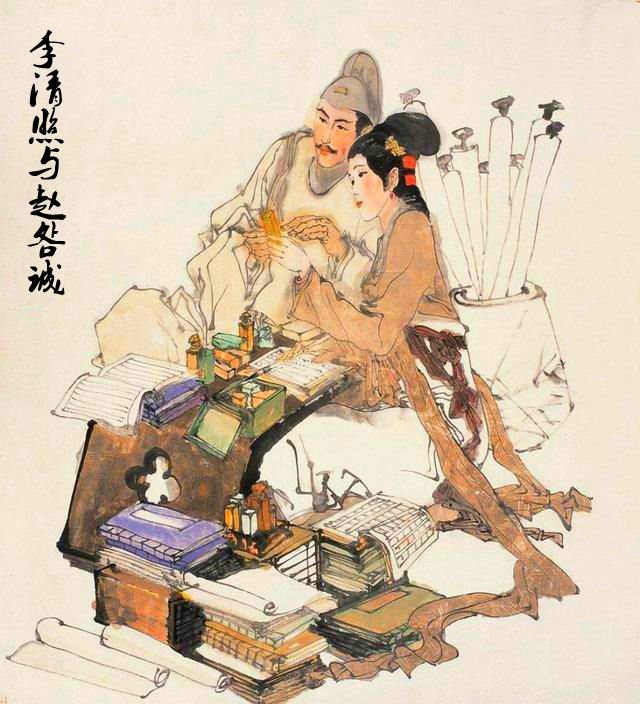
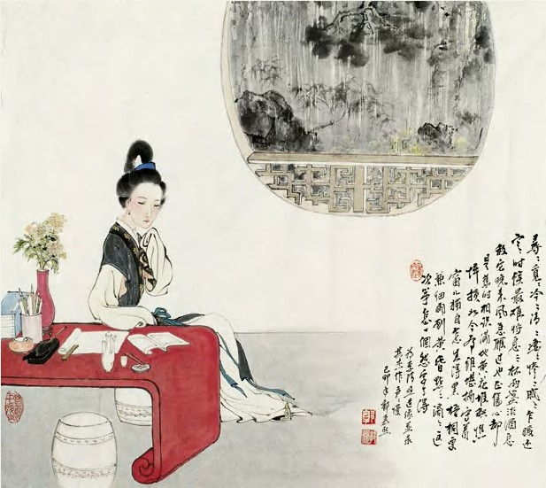
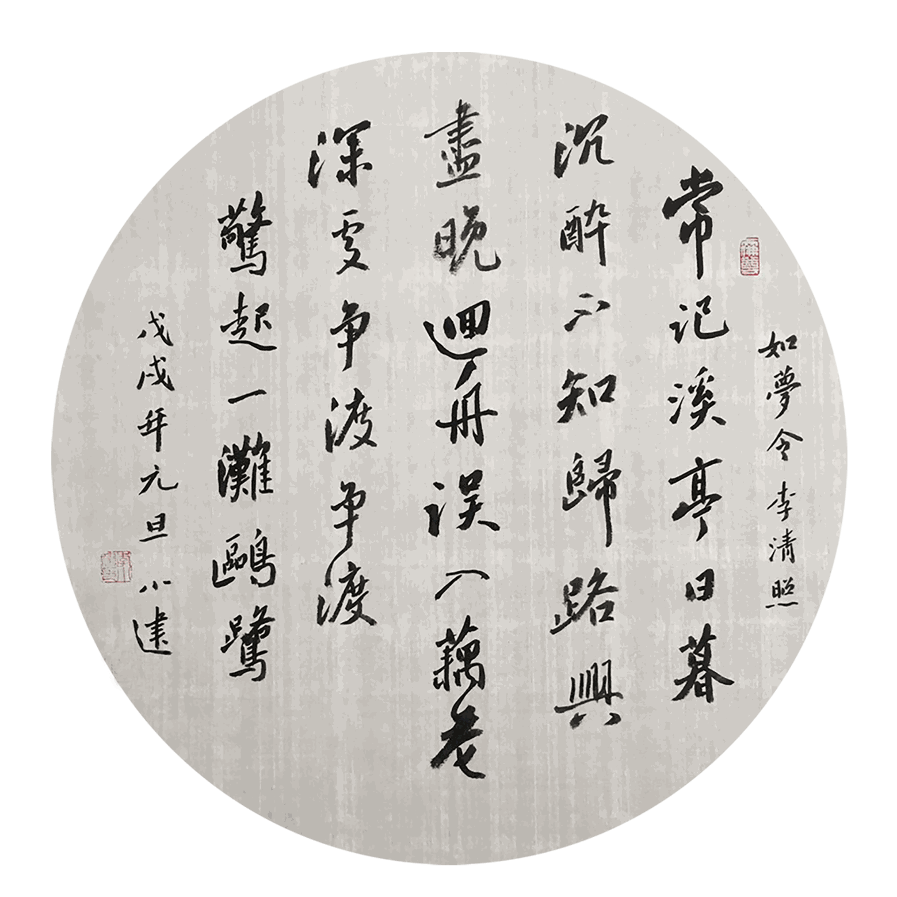
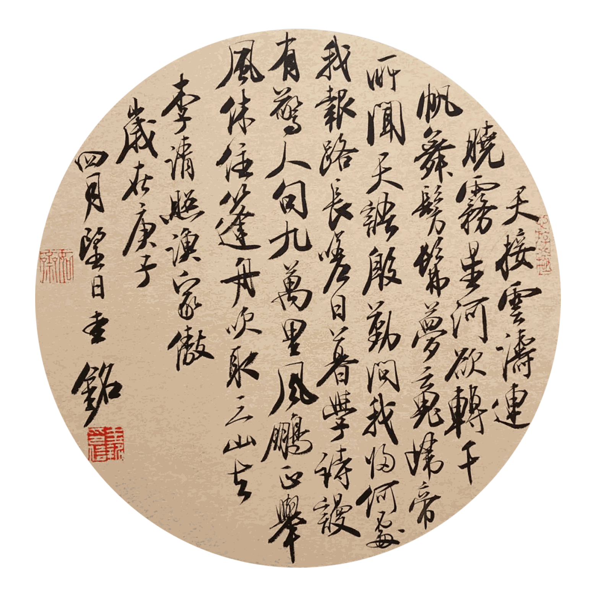

李清照
生当作人杰，死亦为鬼雄。
Li Qing Zhao
“In life be a hero among men, in death be a champion among ghosts.”
April is National Poetry Month, and to commemorate it, this page takes a look at one of the most famous Chinese poets. Tang Dynasty (618–907 CE) poets get the most press — Lǐ Bái 李白 and Dù Fǔ 杜甫 are held on par with Shakespeare — but these men are just the tip of the iceberg.
Lǐ Qīngzhào 李清照 (1084 – c.1155) is one of the best-known female writers in Chinese history. At a time when women commonly burned their poems rather than have them read in public, Li used hers to publicly criticize the government and male peers. She was a defiant visionary who turned years of struggle into lines of startling originality, and today is known as “the most talented woman in history” 千古第一才女 (qiān gǔ dì yī cáinǚ).

To the tune “Drunk in the Blossom’s Shadows”
Light mist, thick vapors, sad through an endless morning.
Camphor incense turns to ash inside the golden beast.
Again it’s Double Ninth Festival,
to the precious pillow, within the gauze netting,
a chill enters at midnight.
Holding wine after sunset by the eastern fence,
a subtle fragrance fills the sleeves.
Don’t say she’s not heartbroken—
as the west wind lifts the blinds,
she’s more withered than the yellow flowers.

To the tune “As If in a Dream”
I often recall one sunset in a riverside pavilion.
Having drunk too much, I forgot the way home.
Knowing it was late, I started back in my boat at dusk
but paddled by mistake into a thick patch of lotuses.
Struggling to get out,
struggling to get out,
I startled a whole sandbar of egrets into flight.

To the tune “Note after Note, Long Song”
Searching, hunting, seeking, looking,
so chilly and yet so clear.
Distressed, dismal, and forlorn.
Warm awhile then cold again, it’s that season,
the worst for taking care of yourself.
How can two or three cups of weak wine hold up against
the strength of the evening wind?
The wild geese have flown past,
truly saddening the heart,
what’s more, I recognize them from years past.
Born in 1084
In 1101 she married Zhao Mingcheng

The Jurchen Invasion
Widowhood
Late Life in the South


如梦令
常记溪亭日暮，沉醉不知归路。
兴尽晚回舟，误入藕花深处。
争渡，争渡，惊起一滩鸥鹭。

木兰花
沉水香消人悄悄，楼上朝来寒料峭。
春生南浦水微波，雪满东山风未扫。
金尊莫诉连壶倒，卷起重帘留晚照。
为君欲去更凭栏，人意不如山色好。

渔家傲
天接云涛连晓雾，
星河欲转千帆舞。
仿佛梦魂归帝所。
闻天语，殷勤问我归何处。
我报路长嗟日暮，
学诗谩有惊人句。
九万里风鹏正举。
风休住，蓬舟吹取三山去！